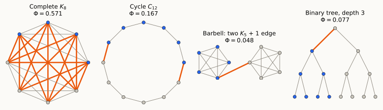
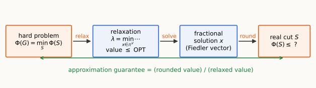
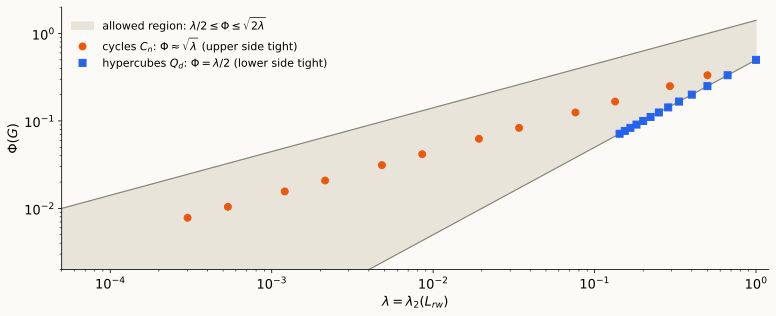
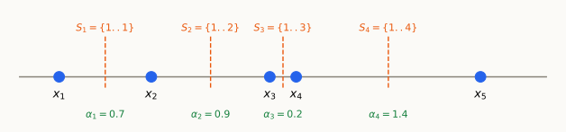
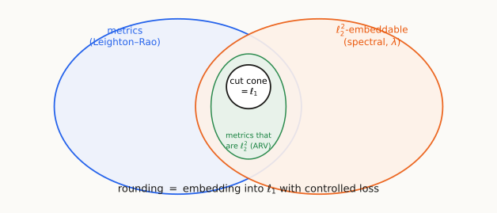
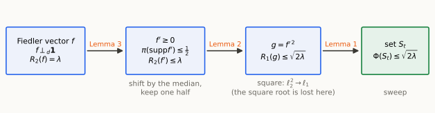
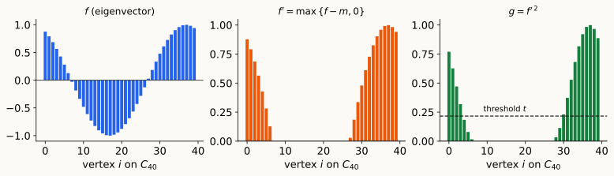
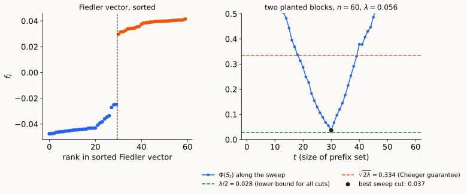
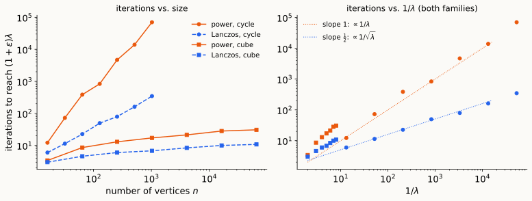

Relaxation · ℓ₁ and ℓ₂² metrics · rounding by embedding
\(G = (V,E,w)\) undirected, connected; \(d_i = \sum_j w_{ij}\), \(\mathrm{vol}(S) = \sum_{i\in S} d_i\), \(\pi = d/\mathrm{vol}(V)\). Random-walk Laplacian \(L_{rw} = I - D^{-1}A\), spectral gap \(\lambda := \lambda_2(L_{rw})\).
Poincaré. \(\;\lambda\,\mathrm{Var}_\pi(f)\le\mathcal E(f,f)\), i.e. \(\;\lambda = \min_{f\ \text{nonconstant}} \dfrac{\sum_{ij\in E}w_{ij}(f_i-f_j)^2}{\sum_i d_i (f_i-\bar f)^2}\).
Two certificates for the gap (Lecture 5). Upper bound on \(\lambda\): exhibit a test function \(f\). Lower bound on \(\lambda\): route flow along canonical paths, \(\lambda_2(L)\ge 2n/\kappa\).
Open question from Lecture 5. The binary tree has a bottleneck at the root and small \(\lambda\). Is a small gap always caused by a bottleneck? When do test functions and paths meet?
Plan. Conductance is a combinatorial optimization problem. Its relaxation is \(\lambda\). Cheeger’s inequality says the relaxation can be rounded, and the rounding is a metric embedding (\(\ell_2^2\to\ell_1\)) followed by a sweep.
Which of these graphs feel well connected? We want one number that says so.

Blue = the set \(S\) achieving the minimum, orange = the edges it cuts. Small \(\Phi\) \(\Leftrightarrow\) a sparse cut separating two large pieces.
For \(S\subset V\), the conductance of \(S\) and of the graph:
\[ \Phi(S) = \frac{w(S,\bar S)}{\min\{\mathrm{vol}(S),\mathrm{vol}(\bar S)\}},\qquad \Phi(G) = \min_{\emptyset\ne S\subsetneq V}\Phi(S),\qquad w(S,\bar S)=\sum_{i\in S,\,j\notin S}w_{ij}. \]
Random-walk reading. Start the stationary walk, conditioned on being in \(S\) (so \(i\in S\) w.p. \(\propto d_i\)). Then \(\;\Pr[\text{leave } S\text{ in one step}] = \dfrac{w(S,\bar S)}{\mathrm{vol}(S)}\).
So \(\Phi(S)\) is the escape probability of the set (for the smaller side), and \(\Phi(G)\) is the worst bottleneck. In the notation of Lecture 2: \(Q(S,\bar S)/\min\{\pi(S),\pi(\bar S)\}\) with \(Q = w/\mathrm{vol}(V)\).
\(\Phi(G)\) small \(\;\Rightarrow\;\) a set the walk rarely leaves \(\;\Rightarrow\;\) slow mixing. Is the converse true?
| Graph (\(n\) vertices) | \(\Phi(G)\) | \(\lambda = \lambda_2(L_{rw})\) |
|---|---|---|
| Complete \(K_n\) | \(\lceil n/2\rceil/(n-1)\approx\tfrac12\) | \(\dfrac{n}{n-1}\) |
| Cycle \(C_n\) (\(n\) even) | \(\dfrac{2}{n}\) | \(1-\cos\dfrac{2\pi}{n}\approx\dfrac{2\pi^2}{n^2}\) |
| Hypercube \(Q_d\) (\(n=2^d\)) | \(\dfrac1d=\dfrac1{\log_2 n}\) | \(\dfrac2d\) |
| Binary tree (\(n=2^{h+1}-1\)) | \(\dfrac{1}{n-2}\) (cut one root edge) | \(\Theta(1/n)\) (numerically \(\approx 0.5/n\)) |
| Barbell (two \(K_m\) + 1 edge) | \(\dfrac{1}{m(m-1)+1}\) | \(\approx\Phi\) |
Look at the cycle. \(\Phi\approx 2/n\) but \(\lambda\approx 2\pi^2/n^2\). The gap is about the square of the conductance. Hold on to this: it is the square root in Cheeger’s inequality.
Define, for \(f\in\mathbb R^V\): \(\;\|\nabla f\|_1 = \sum_{ij\in E}w_{ij}|f_i-f_j|\) and the \(\ell_1\) variance \(\;\mathrm{Var}_1(f) = \min_{c}\sum_i d_i|f_i-c|\) (deviation from the \(\pi\)-median).
Claim. \(\;\displaystyle\Phi(G) = \min_{f\ \text{nonconstant}}\frac{\|\nabla f\|_1}{\mathrm{Var}_1(f)}\), and the minimum is attained by a cut vector \(f=\mathbf 1_S\).
(\(\le\)) For \(f=\mathbf 1_S\): \(\|\nabla f\|_1 = w(S,\bar S)\) and \(\mathrm{Var}_1(f) = \min_{c\in[0,1]}\big(\mathrm{vol}(S)(1-c)+\mathrm{vol}(\bar S)c\big) = \min\{\mathrm{vol}(S),\mathrm{vol}(\bar S)\}\).
(\(\ge\)) Let \(S_t=\{f>t\}\). Layer-cake: \(\;|f_i-f_j| = \int_{\mathbb R}\big|\mathbf 1_{S_t}(i)-\mathbf 1_{S_t}(j)\big|\,dt\), so \(\|\nabla f\|_1=\int w(S_t,\bar S_t)\,dt\). With \(c\) the median, \(\mathrm{Var}_1(f) = \int\min\{\mathrm{vol}(S_t),\mathrm{vol}(\bar S_t)\}\,dt\). A ratio of integrals is at least the smallest ratio of integrands: \[\|\nabla f\|_1 = \int\Phi(S_t)\min\{\mathrm{vol}(S_t),\mathrm{vol}(\bar S_t)\}\,dt\ \ge\ \min_t\Phi(S_t)\cdot\mathrm{Var}_1(f).\ \square\]
(a) Fix the denominator. The median is awkward. Use the pairwise spread instead, the \(\ell_1\) analogue of \(\mathrm{Var}=\tfrac12\mathbb E(X-Y)^2\): \[\mathrm{Spr}_1(f) = \frac1{\mathrm{vol}(V)}\sum_{i<j}d_id_j|f_i-f_j|.\] On \(\mathbf 1_S\) it equals \(\mathrm{vol}(S)\mathrm{vol}(\bar S)/\mathrm{vol}(V)\in\big[\tfrac12,1\big]\cdot\min\{\mathrm{vol}(S),\mathrm{vol}(\bar S)\}\). The same layer-cake argument gives \[\bar\phi(G):=\min_f\frac{\|\nabla f\|_1}{\mathrm{Spr}_1(f)}=\min_S\bar\phi(S),\quad \bar\phi(S) = \frac{w(S,\bar S)\,\mathrm{vol}(V)}{\mathrm{vol}(S)\mathrm{vol}(\bar S)},\qquad \Phi\le\bar\phi\le 2\Phi.\]
(b) Swap the norm. Replace \(|f_i-f_j|\) by \((f_i-f_j)^2\) in numerator and denominator. (Numerator too: the ratio must stay scale-invariant. The two agree on \(\{0,1\}\)-vectors.)
| \(\ell_1\) | \(\ell_2^2\) | |
|---|---|---|
| numerator | \(\sum_E w\,\lvert\Delta f\rvert\) | \(\sum_E w\,(\Delta f)^2\) |
| centered / pairwise denominator | \(\mathrm{Var}_1\) (median) / \(\mathrm{Spr}_1\) (differ by \(\le2\)) | \(\mathrm{Var}_2\) (mean) \(=\mathrm{Spr}_2\) (identical) |
| minimum over \(f\) | \(\Phi\) / \(\bar\phi\), attained at cuts | \(\lambda\), attained at an eigenvector |
| difficulty | NP-hard | linear algebra |
So relax. Find a fractional solution that is easy to compute and gives a lower bound, then round it to a real cut and bound the loss.
On a cut vector the \(\ell_1\) and \(\ell_2^2\) quantities coincide, since \(|a|=a^2\) for \(a\in\{0,\pm1\}\): \[\mathbf 1_S^\top L\,\mathbf 1_S = w(S,\bar S),\qquad \mathrm{Spr}_2(\mathbf 1_S)=\frac{\mathrm{vol}(S)\mathrm{vol}(\bar S)}{\mathrm{vol}(V)}.\]
Hence \[\bar\phi(G)=\min_{x\in\{0,1\}^V\setminus\{\mathbf 0,\mathbf 1\}}\ \frac{\sum_{E}w_{ij}(x_i-x_j)^2}{\mathrm{Var}_2(x)}\qquad\longrightarrow\qquad \min_{x\in\mathbb R^V\ \text{nonconstant}}\ \frac{\sum_{E}w_{ij}(x_i-x_j)^2}{\mathrm{Var}_2(x)}=\lambda .\]
Drop integrality and you get the spectral gap. Same objective, larger feasible set. The new problem is an eigenvalue problem (Poincaré, Lecture 2), solved exactly by the Fiedler vector.
Theorem (easy side). \(\;\lambda\le\bar\phi(G)\le 2\,\Phi(G)\), i.e. \(\;\tfrac12\lambda\le\Phi(G)\).
Proof. Cut vectors are feasible for the relaxation, so the relaxed minimum is smaller: \(\lambda\le\bar\phi(S)\) for every \(S\). Then \(\bar\phi\le2\Phi\). \(\square\)
Reading. If \(G\) has a sparse cut \(S\), then \(x=\mathbf 1_S\) is a test function with small Rayleigh quotient, so \(\lambda\) is small and the walk mixes slowly: bottlenecks cause small gaps. (This is the Lecture 5 test-function argument, with a cut as the test function.)
Contrapositive: if \(\lambda\) is large, every cut is large. The gap certifies expansion, in polynomial time.

The same pattern runs through this course: Leighton–Rao, ARV, \(k\)-way Cheeger, SDPs. What changes is the relaxation and the rounding.
Theorem (Cheeger; Alon–Milman, Dodziuk). For every connected weighted graph, \[\tfrac12\,\lambda\ \le\ \Phi(G)\ \le\ \sqrt{2\lambda}.\] Moreover, the sweep cuts of the Fiedler vector contain a set \(S\) with \(\Phi(S)\le\sqrt{2\lambda}\).
Equivalently: \(\;\lambda\ \ge\ \Phi^2/2\). In the notation of the continuous version: \(\lambda\ge h^2/4\).
Before the proof: is this sandwich tight? Can the square root be avoided?

A semimetric is a symmetric \(d:V\times V\to\mathbb R_{\ge0}\) with \(d_{ii}=0\). A metric also satisfies the triangle inequality \(d_{ij}\le d_{ik}+d_{kj}\). For a semimetric \(d\) define \[d(G)=\sum_{ij\in E}w_{ij}d_{ij},\qquad d(K_G)=\sum_{i<j}\frac{d_id_j}{\mathrm{vol}(V)}\,d_{ij},\] the “total length” of \(d\) on \(G\) and on the complete graph \(K_G\) with weights \(d_id_j/\mathrm{vol}(V)\).
Cut metric of \(S\): \(\;\delta^{S}_{ij}=\mathbf 1[\,i,j\text{ on different sides of }S\,]\). Then \[\delta^S(G)=w(S,\bar S),\qquad \delta^S(K_G)=\frac{\mathrm{vol}(S)\mathrm{vol}(\bar S)}{\mathrm{vol}(V)}\qquad\Longrightarrow\qquad \bar\phi(S)=\frac{\delta^S(G)}{\delta^S(K_G)}.\]
Metric form of the objective. \(\;\bar\phi(G)=\min_S\dfrac{\delta^S(G)}{\delta^S(K_G)}\). Moreover, a function \(f\) gives the line metric \(d_{ij}=|f_i-f_j|\) with \(d(G)=\|\nabla f\|_1\) and \(d(K_G)=\mathrm{Spr}_1(f)\): slide 7 was already a statement about metrics.
A metric \(d\) is \(\ell_1\)-embeddable if \(d_{ij}=\|v_i-v_j\|_1\) for some \(v_i\in\mathbb R^k\). The cut cone is \(\mathrm{CUT}_V=\{\sum_S\alpha_S\,\delta^S:\ \alpha_S\ge0\}\).
Theorem. A semimetric on \(V\) is \(\ell_1\)-embeddable \(\iff\) it lies in the cut cone.

\[|x_i-x_j|=\sum_{t}\alpha_t\,\delta^{S_t}_{ij},\qquad S_t=\{1,\dots,t\},\ \ \alpha_t=x_{t+1}-x_t\quad(\text{points sorted: }x_1\le\dots\le x_n).\]
(\(\Leftarrow\)) A cut metric is \(\ell_1\)-embeddable: \(\delta^S_{ij}=|\mathbf 1_S(i)-\mathbf 1_S(j)|\). A nonnegative combination is embedded by concatenating the coordinates, scaling the \(S\)-th one by \(\alpha_S\): \(\|\cdot\|_1\) adds over coordinates.
(\(\Rightarrow\)) Suppose \(d_{ij}=\sum_{k}|v_i^{(k)}-v_j^{(k)}|\). Both sides are additive over coordinates, so it suffices to treat one coordinate \(x=v^{(k)}\in\mathbb R^V\). Order the vertices so that \(x_{1}\le\dots\le x_{n}\) and put \(S_t=\{1,\dots,t\}\). For \(i<j\), \[|x_i-x_j| = x_j-x_i=\sum_{t=i}^{j-1}(x_{t+1}-x_t)=\sum_{t=1}^{n-1}(x_{t+1}-x_t)\,\delta^{S_t}_{ij},\] because \(\delta^{S_t}_{ij}=1\) exactly when \(i\le t<j\). So \(|x_i-x_j|\) is a nonnegative combination of cut metrics (the same layer-cake as slide 6). Summing over coordinates, \(d\in\mathrm{CUT}_V\). \(\square\)
Why \(\ell_1\) is the right geometry for rounding. A point set on a line is a family of nested cuts \(S_1\subset S_2\subset\cdots\). To round an \(\ell_1\) solution, look at its cuts.
For \(x\in\mathbb R^V_{\ge0}\) let \(\;R_1(x)=\dfrac{\sum_{ij\in E}w_{ij}|x_i-x_j|}{\sum_id_i|x_i|}\) and \(S_t=\{i:x_i>t\}\).
Lemma 1 (sweep). There is a \(t\ge0\) with \(S_t\ne\emptyset\) and \(\;\dfrac{w(S_t,\bar S_t)}{\mathrm{vol}(S_t)}\ \le\ R_1(x)\).
Proof. Layer-cake identities, valid because \(x\ge0\): \[\sum_{ij\in E}w_{ij}|x_i-x_j|=\int_0^\infty w(S_t,\bar S_t)\,dt,\qquad \sum_id_ix_i=\int_0^\infty\mathrm{vol}(S_t)\,dt.\] Let \(t^*\) minimize \(w(S_t,\bar S_t)/\mathrm{vol}(S_t)\) over \(t\) with \(S_t\neq\emptyset\). Then \[\int_0^\infty w(S_t,\bar S_t)\,dt=\int_0^\infty\frac{w(S_t,\bar S_t)}{\mathrm{vol}(S_t)}\mathrm{vol}(S_t)\,dt\ \ge\ \frac{w(S_{t^*},\bar S_{t^*})}{\mathrm{vol}(S_{t^*})}\int_0^\infty\mathrm{vol}(S_t)\,dt.\ \square\]
Remark. The same “ratio of sums \(\ge\) smallest ratio” argument shows that any \(\ell_1\) metric \(d\) has a cut with \(\bar\phi(S)\le d(G)/d(K_G)\). Rounding an \(\ell_1\) solution is free: no loss at all.
A semimetric \(g\) is \(\ell_2^2\)-embeddable if \(g_{ij}=\|v_i-v_j\|_2^2\) for some \(v_i\in\mathbb R^k\).
Lemma. \(\;\lambda=\min\Big\{\dfrac{g(G)}{g(K_G)}:\ g\ \ell_2^2\text{-embeddable, }g\ne0\Big\}.\) Cut metrics are \(\ell_2^2\)-embeddable (\(\delta^S_{ij}=(\mathbf 1_S(i)-\mathbf 1_S(j))^2\)), so this is a relaxation of \(\bar\phi\).
Proof. (\(\le\)) One-dimensional embeddings \(v_i=x_i\in\mathbb R\) give \(g(G)/g(K_G)=\sum_Ew(\Delta x)^2/\mathrm{Var}_2(x)\), minimized at \(\lambda\). (\(\ge\)) For \(v_i\in\mathbb R^k\), split into coordinates and use the mediant inequality \(\dfrac{\sum_ua_u}{\sum_ub_u}\ge\min_u\dfrac{a_u}{b_u}\): \[\frac{g(G)}{g(K_G)}=\frac{\sum_{u=1}^k\sum_Ew_{ij}(v_i^{u}-v_j^{u})^2}{\sum_{u=1}^k\mathrm{Var}_2(v^u)}\ \ge\ \min_u\frac{\sum_Ew_{ij}(v_i^{u}-v_j^{u})^2}{\mathrm{Var}_2(v^u)}\ \ge\ \lambda.\ \square\]
Remarks. (i) Higher-dimensional embeddings add nothing: the relaxation is the same as for scalars. (ii) An \(\ell_2^2\) semimetric need not satisfy the triangle inequality (three collinear points: \(1^2+1^2<2^2\) fails). It is not a metric.

Both relaxations enlarge the cut cone: optimizing over a bigger set gives a smaller value (a lower bound). The price is paid at rounding, when we must come back down to \(\ell_1\).
Let \(R_2(x)=\dfrac{\sum_Ew_{ij}(x_i-x_j)^2}{\sum_id_ix_i^2}\) and \(R_1(x)=\dfrac{\sum_Ew_{ij}|x_i-x_j|}{\sum_id_i|x_i|}\) (uncentered). Let \(f\) be the Fiedler vector: \(f\perp_d\mathbf 1\) and \(R_2(f)=\lambda\).

Lemma 1 (slide 16) is already proved. Now Lemmas 2 and 3.
Lemma 2. For \(x\ge0\): \(\;R_1(x^2)\le\sqrt{2R_2(x)}\), where \((x^2)_i=x_i^2\).
Proof. Since \(x\ge0\), \(|x_i^2-x_j^2|=|x_i-x_j|(x_i+x_j)\). By Cauchy–Schwarz and \((a+b)^2\le2(a^2+b^2)\): \[\sum_Ew_{ij}|x_i^2-x_j^2|\le\sqrt{\sum_Ew_{ij}(x_i-x_j)^2}\ \sqrt{\sum_Ew_{ij}(x_i+x_j)^2}\le\sqrt{R_2(x)\textstyle\sum_id_ix_i^2}\ \sqrt{2\sum_id_ix_i^2}=\sqrt{2R_2(x)}\sum_id_ix_i^2 .\] (We used \(\sum_Ew_{ij}(x_i^2+x_j^2)=\sum_id_ix_i^2\).) Divide by \(\sum_id_ix_i^2=\sum_id_i|x_i^2|\). \(\square\)
This is where the square root is lost. The map \(x\mapsto x^2\) turns an \(\ell_2^2\) object into an \(\ell_1\) one, but it is not a distortion-bounded embedding of all pairs. It preserves the ratio of the two sums only up to a square root, via Cauchy–Schwarz. On the cycle (slide 13) the eigenvector is a cosine and Cauchy–Schwarz is nearly tight: that is the example showing the loss is real.
Lemma 3. If \(f\perp_d\mathbf 1\), there is \(f'\ge0\) with \(\pi(\{f'>0\})\le\tfrac12\) and \(R_2(f')\le R_2(f)\).
Proof. Let \(m\) be a \(\pi\)-median of \(f\) and \(\bar f=f-m\mathbf 1\), so \(\pi(\bar f>0)\le\frac12\) and \(\pi(\bar f<0)\le\frac12\). The numerator is unchanged. Since \(\sum_id_if_i=0\), \(\;\sum_id_i\bar f_i^2=\sum_id_if_i^2+m^2\mathrm{vol}(V)\ge\sum_id_if_i^2\), so \(R_2(\bar f)\le R_2(f)\).
Write \(\bar f=a-b\) with \(a=\max\{\bar f,0\}\), \(b=\max\{-\bar f,0\}\): disjointly supported and \(\ge0\). Then for each edge \(ij\), with \(x=a_i-a_j\), \(y=b_i-b_j\): \(\;xy=-(a_ib_j+a_jb_i)\le0\), so \[(x-y)^2\ \ge\ x^2+y^2\ \Longrightarrow\ N(a-b)\ge N(a)+N(b),\qquad D(a-b)=D(a)+D(b).\] Hence \(\;R_2(\bar f)\ge\dfrac{N(a)+N(b)}{D(a)+D(b)}\ge\min\{R_2(a),R_2(b)\}\). Take \(f'\) to be the better of \(a,b\). \(\square\)
Proof of Cheeger. Fiedler \(f\) \(\xrightarrow{\text{L3}}\) \(f'\) \(\xrightarrow{\text{L2}}\) \(g=f'^2\) \(\xrightarrow{\text{L1}}\) \(S_t\): \[\Phi(S_t)=\frac{w(S_t,\bar S_t)}{\mathrm{vol}(S_t)}\ \le\ R_1(g)\ \le\ \sqrt{2R_2(f')}\ \le\ \sqrt{2\lambda}.\] The first equality holds because \(S_t\subseteq\mathrm{supp}\,f'\) has \(\pi(S_t)\le\frac12\), so \(\mathrm{vol}(S_t)=\min\{\mathrm{vol}(S_t),\mathrm{vol}(\bar S_t)\}\). \(\square\)

Guarantee, with a two-sided certificate. Output \(S\) satisfies \(\Phi(S)\le\sqrt{2\lambda}\le2\sqrt{\Phi(G)}\), and every cut has \(\Phi\ge\lambda/2\). So the algorithm both finds a cut and proves how far from optimal it can be: ratio \(\le\sqrt{8/\lambda}\) relative to the lower bound \(\lambda/2\).
Each iteration of power method or Lanczos costs \(O(m)\). How many iterations? Next two slides.

The best sweep cut lies between \(\lambda/2\) and \(\sqrt{2\lambda}\), as the theorem promises (here it recovers the planted bisection).

\(\varepsilon=0.1\), average of 5 random starts. We measure the Rayleigh quotient, not eigenvector error: \(\lambda\) is repeated on both graphs (multiplicity 2 on the cycle, \(d\) on the cube), and Cheeger only needs a vector with a small quotient.
Takeaway. Standard methods have running time depending on \(\lambda\): power \(\approx1/\lambda\), Krylov (Lanczos; conjugate gradient is its linear-system sibling) \(\approx1/\sqrt\lambda\). Cycle: \(n^2\) vs. \(n\). Cube: \(\log n\) vs. \(\sqrt{\log n}\). The graphs with the sparsest cuts are exactly the slowest to cut. Acceleration helps but does not remove the dependence. (Next: electrical flows and solvers.)
Keep the triangle inequality, drop \(\ell_1\)-ness: \[\min\ d(G)\quad\text{s.t.}\quad d(K_G)=1,\quad d\ \text{a metric on }V.\] A linear program (the triangle inequalities are the constraints). It is a relaxation because \(\mathrm{CUT}_V\subseteq\{\text{metrics}\}\).
Dual \(=\) maximum concurrent multicommodity flow: route \(\alpha\,d_id_j/\mathrm{vol}(V)\) units between every pair \(i,j\) with edge congestion \(\le w_{ij}\), maximize \(\alpha\). This is exactly the canonical-path congestion from Lecture 5 (there with one fixed routing, here optimized).
Rounding by embedding. Bourgain (1985): every \(n\)-point metric embeds into \(\ell_1\) with distortion \(O(\log n)\). Then use Lemma 1 / the cut cone: \(O(\log n)\)-approximation (Linial–London–Rabinovich, Aumann–Rabani).
Second instance of the template: relax \(\to\) solve \(\to\) embed into \(\ell_1\) \(\to\) sweep.
| Relaxation | Feasible set | Solved by | Rounding | Guarantee |
|---|---|---|---|---|
| Spectral | \(\ell_2^2\)-embeddable (no triangle ineq.) | eigenvector | square, sweep (L3, L2, L1) | \(\Phi(S)\le\sqrt{2\lambda}\le2\sqrt{\Phi^*}\) |
| Leighton–Rao | all metrics | LP | Bourgain \(\to\ell_1\), sweep | \(O(\log n)\) |
| ARV | \(\ell_2^2\) and triangle inequality | SDP | structure theorem + sweep | \(O(\sqrt{\log n})\) |
What if the graph has \(k\) clusters rather than one bottleneck? Then \(\lambda_2,\dots,\lambda_k\) are all small, and one eigenvector is not enough.
Same template, now with \(k\)-dimensional embeddings. Next lecture.
Reading. Trevisan’s posts on Cheeger in manifolds and its proof; Erasmo Tani’s note on the continuous Cheeger inequality.
\(\mathcal M\) compact Riemannian manifold without boundary, measure \(\mu\), Laplacian \(L=-\operatorname{div}\nabla\) (the same operator whose heat flow we studied). Cheeger constant: \[h(\mathcal M)=\inf_{0<\mu(S)\le\frac12\mu(\mathcal M)}\frac{\mu_{n-1}(\partial S)}{\mu(S)}.\]
| Graph | Manifold |
|---|---|
| vertices \(V\), weights \(d_i\) | points \(\mathcal M\), measure \(\mu\) |
| \(\mathrm{vol}(S)\) | \(\mu(S)\) |
| cut \(w(S,\bar S)\) | boundary area \(\mu_{n-1}(\partial S)\) |
| \(L=\nabla^*\nabla\) | \(L=-\operatorname{div}\nabla\) |
| \(\sum_Ew(\Delta f)^2=f^\top Lf\) | \(\int\lVert\nabla f\rVert^2d\mu\) |
| \(\Phi(G)\) | \(h(\mathcal M)\) |
Theorem (Cheeger). \(\;\lambda_1\ge h^2/4\), with \(\lambda_1\) the first nonzero eigenvalue. (This is the graph inequality \(\Phi\le\sqrt{2\lambda}\).)
With \(R_1(f)=\dfrac{\int\lVert\nabla f\rVert d\mu}{\int|f|d\mu}\) and \(R_2(f)=\dfrac{\int\lVert\nabla f\rVert^2d\mu}{\int f^2d\mu}\):
Result: \(h\le2\sqrt{\lambda_1}\), i.e. \(\lambda_1\ge h^2/4\).
Remark (Buser). The reverse inequality, \(\lambda_1\le C(h+h^2)\), needs a lower bound on Ricci curvature, whereas for graphs the easy side is free. (Discussed in the lecture notes.)
Graph. \(G=(V,E,w)\), \(d_i=\sum_jw_{ij}\), \(\mathrm{vol}(S)=\sum_{i\in S}d_i\), \(\pi=d/\mathrm{vol}(V)\), \(w(S,\bar S)=\sum_{i\in S,j\notin S}w_{ij}\).
Conductance. \(\Phi(S)=\dfrac{w(S,\bar S)}{\min\{\mathrm{vol}S,\mathrm{vol}\bar S\}}\); \(\;\bar\phi(S)=\dfrac{w(S,\bar S)\,\mathrm{vol}(V)}{\mathrm{vol}(S)\mathrm{vol}(\bar S)}\); \(\;\Phi\le\bar\phi\le2\Phi\).
Variances / spreads. \(\mathrm{Var}_1(f)=\min_c\sum_id_i|f_i-c|\); \(\;\mathrm{Var}_2(f)=\sum_id_i(f_i-\bar f)^2=\mathrm{Spr}_2(f)\); \(\;\mathrm{Spr}_p(f)=\frac1{\mathrm{vol}(V)}\sum_{i<j}d_id_j|f_i-f_j|^p\).
Gap. \(\lambda=\lambda_2(L_{rw})=\min_f\dfrac{\sum_Ew(\Delta f)^2}{\mathrm{Var}_2(f)}\). Cheeger: \(\;\tfrac12\lambda\le\Phi(G)\le\sqrt{2\lambda}\).
Metric view. \(d(G)=\sum_Ew_{ij}d_{ij}\); \(\;d(K_G)=\sum_{i<j}\frac{d_id_j}{\mathrm{vol}V}d_{ij}\); \(\;\delta^S(G)=w(S,\bar S)\), \(\delta^S(K_G)=\frac{\mathrm{vol}S\,\mathrm{vol}\bar S}{\mathrm{vol}V}\). \(\;\mathrm{CUT}_V=\ell_1\)-embeddable metrics.
Rayleigh-type quotients (uncentered). \(R_1(x)=\frac{\sum_Ew|x_i-x_j|}{\sum_id_i|x_i|}\), \(\;R_2(x)=\frac{\sum_Ew(x_i-x_j)^2}{\sum_id_ix_i^2}\).
Lemma 1 (sweep). \(x\ge0\Rightarrow\exists t:\ w(S_t,\bar S_t)/\mathrm{vol}(S_t)\le R_1(x)\). Lemma 2. \(x\ge0\Rightarrow R_1(x^2)\le\sqrt{2R_2(x)}\). Lemma 3. \(f\perp_d\mathbf1\Rightarrow\exists f'\ge0\), \(\pi(f'>0)\le\frac12\), \(R_2(f')\le R_2(f)\).
Mediant inequality. \(\dfrac{\sum a_u}{\sum b_u}\ge\min_u\dfrac{a_u}{b_u}\) for \(b_u>0\).
Layer cake. \(|x_i-x_j|=\int|\mathbf1[x_i>t]-\mathbf1[x_j>t]|\,dt\); for \(x\ge0\), \(\sum_id_ix_i=\int_0^\infty\mathrm{vol}(S_t)dt\).